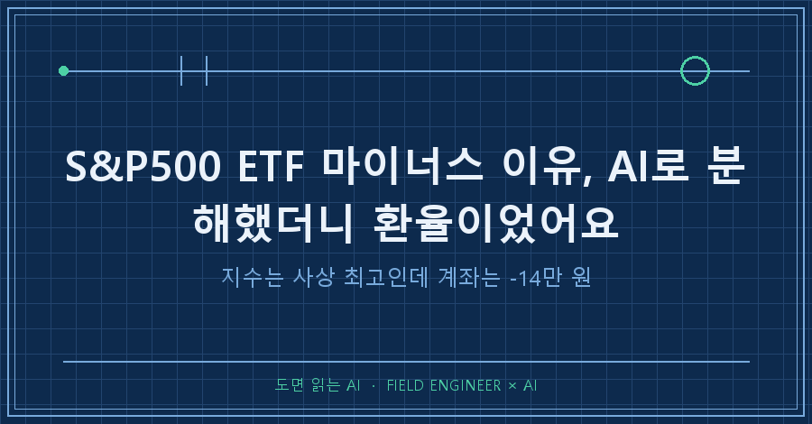
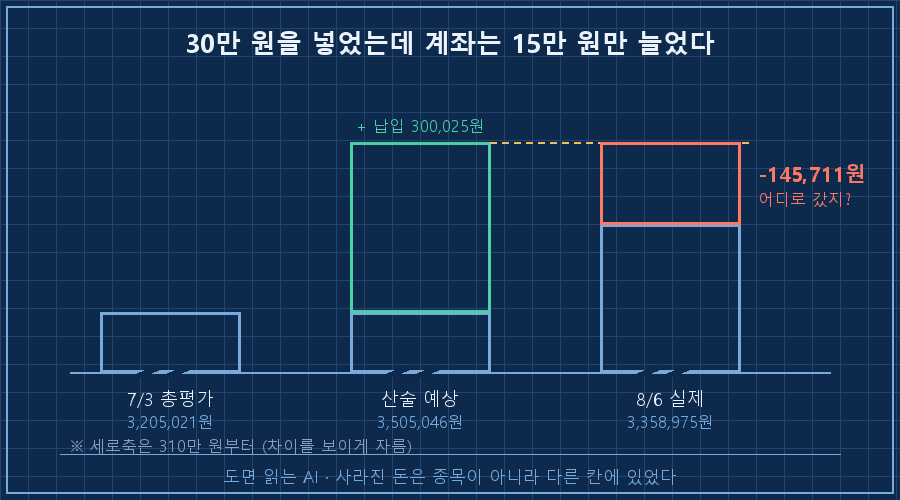
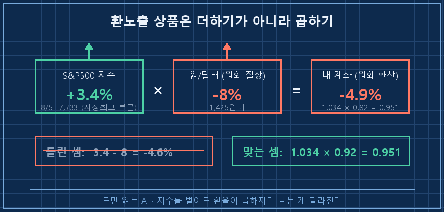
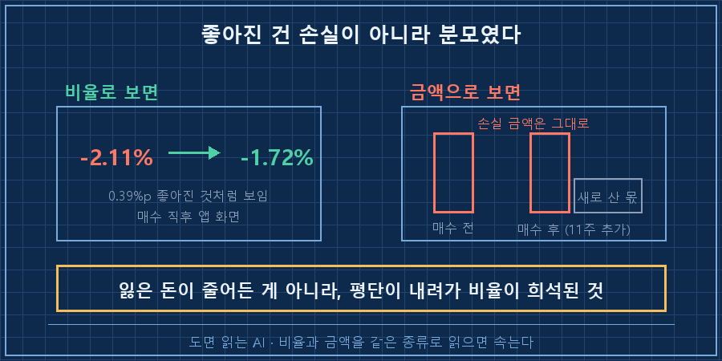

이번 달에 30만 원을 새로 넣었는데, 계좌는 15만 원밖에 안 늘었어요.
같은 날 뉴스에는 S&P500이 사상 최고라고 떠 있었고요.
S&P500 ETF 마이너스 이유는 지수가 아니라 환율인 경우가 많습니다. 지수가 3.4% 올라도 원화가 8% 강해지면 원화로 환산한 내 계좌는 5% 가까이 줄어요. 그리고 이걸 알아내는 데 필요한 건 예측이 아니라 분해 요청 한 줄이었습니다.
제 일은 설비가 왜 그렇게 움직였는지 신호를 하나씩 떼어내 보는 거예요. 그 바닥에서 15년 됐습니다.
그 습관을 이번엔 제 계좌에 써봤습니다!
투자 얘기처럼 보이지만, 사실은 숫자에 속는 법에 대한 기록입니다.
미리 말씀드리면 종목 추천이 아니에요. 매달 소액을 규칙대로 적립하는 삼백만 원대 계좌 얘기입니다.
1. 30만 원을 넣었는데 왜 15만 원만 늘었을까요
8월 초에 정기 적립 매수를 실행했어요. 국내 상장 S&P500 ETF 11주, 약 30만 원어치요.
체결하고 나서 습관대로 앱 숫자와 제 기록을 대조했는데, 여기서 걸렸습니다.
[7/3 → 8/6, 한 달]
7/3 매수 후 총평가 3,205,021원
8/6 신규 납입 +300,025원
8/6 매수 후 총평가 3,358,975원
→ 납입액 대비 차이 -145,711원30만 원을 넣었으니 산술적으로는 350만 원이 찍혀야 하는데 335만 원이었어요.
14만 5천 원이 어디론가 사라진 거죠..
여기서 제일 먼저 튀어나온 생각은 "종목을 잘못 골랐나"였어요.
그런데 같은 기간 S&P500은 8월 5일 기준 7,733으로 사상 최고 부근이었습니다.
지수는 최고치, 내 계좌는 마이너스. 둘 중 하나는 거짓말을 하고 있는 셈이잖아요.

2. "왜 떨어졌어?" 대신 "분해해줘"라고 시켰어요
여기가 이번에 제일 크게 배운 부분이에요.
이럴 때 AI한테 "왜 마이너스야?"라고 물으면 시장 상황 설명이 문단으로 돌아옵니다.
읽으면 다 그럴듯한데, 제 계좌의 14만 5천 원이 어디로 갔는지는 한 줄도 안 나와요.
그래서 저는 이렇게 시켰어요.
왜 떨어졌는지 설명하지 말고,
이 기간 평가액 변화를 ①지수 ②환율 ③신규 납입
세 갈래로 분해해서 각각 얼마인지 숫자로 내놔.'왜'는 이야기를 요구하는 질문이고, '분해'는 계산을 요구하는 질문이에요.
설비에서 온도가 튀었을 때 "왜 튀었지?"라고 물으면 추측이 나오지만, "센서·배관·제어 셋 중 어디서 얼마나 기여했지?"라고 물으면 숫자가 나오는 것과 똑같더라고요.
돌아온 답은 이랬어요.
[원인 분해]
S&P500 지수 (7/3→8/5) +3.4% (8/5 7,733, 사상최고 부근)
원/달러 (원화 절상) 약 -8% (1,425원대)
원화 환산 = 1.034 × 0.92 ≈ 0.951 → 약 -4.9%지수는 분명히 올랐어요. 그런데 그 위에 환율이 곱해집니다.
환노출 상품은 '지수 수익률 + 환율 수익률'이 아니라 곱셈이거든요.
3.4% 벌고 8% 깎이면 더한 게 아니라 곱해져서 약 -4.9%가 되는 거예요.
제 계좌에서 사라진 14만 5천 원은 종목 실패가 아니라 통째로 환율 효과였습니다.

3. 그런데 숫자가 한 번 더 속였어요
여기서 끝난 줄 알았는데, 같은 화면에 착시가 하나 더 있었어요.
매수 직후 평가손익률이 이렇게 바뀌어 있었거든요.
[체결 검증]
평가손익 -2.11% → -1.72%
전종목 합계 3,358,975원 = 앱 총평가 일치
보유수량 47주 → 58주 (타종목 전부 불변)숫자만 보면 0.39%p 좋아졌잖아요. 손실이 회복된 것처럼 보이죠.
아니었습니다.
현재가 부근에서 11주를 더 샀으니 평단이 내려간 것뿐이에요.
분모가 커지면서 비율이 희석된 거지, 잃은 금액은 1원도 안 돌아왔어요.
흔히 물타기라고 부르는 그 효과입니다.
이게 무서운 건, 아무도 거짓말을 안 했다는 점이에요.
앱도 맞고, 계산도 맞고, 제 기록도 맞아요. 그냥 제가 비율과 금액을 같은 종류로 읽었을 뿐이죠.
| 화면에 보인 것 | 실제로 일어난 일 | 판별하는 질문 |
|---|---|---|
| 계좌 -14만 5천 원 | 지수는 +3.4%, 환율이 -8% | "지수·환율·납입으로 분해하면?" |
| 평가손익 -2.11% → -1.72% | 손실 금액은 그대로, 평단만 하락 | "비율 말고 금액으로 얼마?" |
| 총평가 +15만 원 | 30만 원 넣은 결과 | "내 돈 넣은 것 빼면 얼마?" |

이런 게 궁금하실 것 같아요
Q. 그럼 환헤지 상품으로 갈아타야 하나요?
저는 안 갈아탔어요. 판단할 근거가 없어서요. 이번 건은 환율이 원화 강세 쪽으로 움직인 국면이었는데, 반대로 돌면 같은 논리로 제 계좌가 이유 없이 좋아 보일 겁니다. 제가 이번에 얻은 건 결론이 아니라 내 계좌의 마이너스가 어느 칸에서 나왔는지 아는 능력이에요. 상품 선택은 그다음 문제고, 이건 제 기록일 뿐 권유가 아닙니다.
Q. AI한테 이런 걸 물으면 그냥 지어내지 않나요?
그래서 분해를 시킬 때 제 실제 숫자를 같이 줍니다. 총평가액, 납입액, 보유 수량처럼 앱에서 그대로 읽히는 값이요. 검산이 가능한 숫자를 주면 답이 맞았는지 제가 확인할 수 있거든요. 실제로 이번에도 전종목 합계와 앱 총평가가 일치하는지 먼저 대조하고 넘어갔어요. 검산할 수 없는 질문은 애초에 안 시키는 게 낫더라고요.
숫자 앞에서 제가 쓰는 질문은 이제 세 개로 줄었어요.
- ☐ 이 변화를 요인별로 분해하면 각각 얼마인가
- ☐ 지금 보는 게 비율인가 금액인가
- ☐ 내가 넣은 돈을 빼도 같은 결론인가
세 줄이라 투자 말고도 아무 데나 붙습니다! 설비 데이터든 업무 지표든, 좋아 보이는 숫자가 나오면 저는 이제 저 세 개부터 던져요.
계좌가 마이너스라고 종목을 탓하기 전에, 그 마이너스가 어느 칸에서 나온 건지부터 확인해보시면 어떨까요.
저는 그거 안 하고 한 달을 애먼 종목 의심하며 보낼 뻔했거든요..
이렇게 숫자한테 속아본 기록은 makefield.ai에 월별로 쌓아두고 있어요.
---
현장 엔지니어를 위한 AI 도입·자동화 문의: makefield.ai
태그: #S&P500ETF마이너스 #미국ETF환율 #환율때문에손실 #ETF평가손익 #평단하락착시 #AI원인분석 #AI에게질문하는법 #AI프롬프트 #적립식투자기록 #환노출ETF #AI활용법 #숫자읽는법 #데이터분해 #현장엔지니어 #도면읽는AI